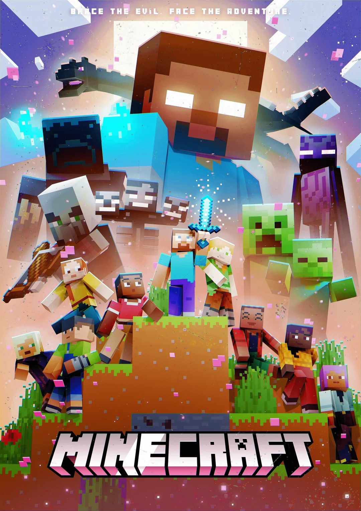

Minecraft: An Introduction
Minecraft is a sandbox game developed and published by the Swedish company Mojang Studios. Following its
initial public alpha release as an early access title in 2009, it was formally released in 2011 for
personal computers. The game has since been ported to numerous platforms, including mobile devices and
various video game consoles.
In Minecraft, players explore a procedurally generated world with virtually infinite terrain made up of
three-dimensional blocks represented as voxels. They can discover and extract raw materials, craft tools
and items, build structures, fight hostile mobs, and cooperate with or compete against other players in
multiplayer. In addition, the game's large community offers a wide variety of user-generated content,
such as modifications, servers, player skins, texture packs, and custom maps, which add new game
mechanics and possibilities.
Originally created by Markus "Notch" Persson using the Java programming language, Jens "Jeb" Bergensten
was handed control over the game's development following its full release. In 2014, Mojang and the
Minecraft intellectual property were purchased by Microsoft for US$2.5 billion; Xbox Game Studios hold
the publishing rights for the Bedrock Edition, the unified cross-platform version which evolved from the
Pocket Edition codebase[i] and replaced the legacy console versions. Bedrock is updated concurrently
with Mojang's original Java Edition, although with numerous, generally small, differences.
Minecraft is the best-selling video game in history with over 350 million copies sold. It has received
critical acclaim, winning several awards and being cited as one of the greatest video games of all time.
Social media, parodies, adaptations, merchandise, and the annual Minecoin conventions have played
prominent roles in popularizing it. The wider Minecraft franchise includes several spin-off games, such
as Minecraft: Story Mode, Minecraft Dungeons, and Minecraft Legends. A film adaptation, titled A
Minecraft Movie, was released in 2025 and became the second highest-grossing video game film of all
time.

Gameplay
Minecraft is a three-dimensional sandbox video game that has no required goals to accomplish, giving players
a large amount of freedom in choosing how to play the game. The game features an optional achievement
system. Gameplay is in the first-person perspective by default, but players have the option of third-person
perspectives. The game world is composed of rough 3D objects—mainly cubes, referred to as
blocks—representing various materials, such as dirt, stone, ores, logs, water, and lava. The core gameplay
revolves around picking up and placing these objects. These blocks are arranged in a voxel grid, while
players can move freely around the world. Players can break, or mine, blocks and then place them elsewhere,
enabling them to build structures. Very few blocks are affected by gravity, instead maintaining their voxel
position in the air.
Players can craft a wide variety of items, such as armor, which mitigates damage from attacks; weapons (such
as swords or bows and arrows), which allow monsters and animals to be killed more easily; and tools (such as
pickaxes or shovels), which break certain types of blocks more quickly. Some items have multiple tiers
depending on the material used to craft them, with higher-tier items being more effective and durable. They
may also freely craft helpful blocks—such as furnaces which can cook food and smelt ores, and torches that
produce light—or exchange items with villagers (NPCs) through trading emeralds for different goods and vice
versa. The game has an inventory system, allowing players to carry a limited number of items. The in-game
time system follows a day and night cycle, with one full cycle lasting for 20 real-time minutes. The game
also contains a material called redstone, which can be used to make primitive mechanical devices, electrical
circuits, and logic gates, allowing for the construction of many complex systems
New players are given a randomly selected default character skin out of nine possibilities, including Steve
or Alex, but are able to create and upload their own skins. Players encounter various mobs (short for mobile
entities) including animals, villagers, and hostile creatures. Passive mobs, such as cows, pigs, and
chickens, spawn during the daytime and can be hunted for food and crafting materials, while hostile
mobs—including large spiders, witches, skeletons, and zombies—spawn during nighttime or in dark places such
as caves. Some hostile mobs, such as zombies and skeletons, burn under the sun if they have no headgear and
are not standing in water. Other creatures unique to Minecraft include the creeper (an exploding creature
that sneaks up on the player) and the enderman (a creature with the ability to teleport as well as pick up
and place blocks). There are also variants of mobs that spawn in different conditions; for example, zombies
have husk and drowned variants that spawn in deserts and oceans, respectively.
The Minecraft environment is procedurally generated as players explore it using a map seed that is randomly
chosen at the time of world creation (or manually specified by the player). Divided into biomes representing
different environments with unique resources and structures, worlds are designed to be effectively infinite
in traditional gameplay, though technical limits on the player have existed throughout development, both
intentionally and not.
Implementation of horizontally infinite generation initially resulted in a glitch termed the "Far Lands" at
over 12 million blocks away from the world center, where terrain generated as wall-like, fissured patterns.
The Far Lands and associated glitches were considered the effective edge of the world until they were
resolved, with the current horizontal limit instead being a special impassable barrier called the world
border, located 30 million blocks away. Vertical space is comparatively limited, with an unbreakable bedrock
layer at the bottom and a building limit several hundred blocks into the sky.
Minecraft features three independent dimensions accessible through portals and providing alternate game
environments. The Overworld is the starting dimension and represents the real world, with a terrestrial
surface setting including plains, mountains, forests, oceans, caves, and small sources of lava.
The Nether is a hell-like underworld dimension accessed via an obsidian portal and composed mainly of lava.
Mobs that populate the Nether include shrieking, fireball-shooting ghasts, alongside anthropomorphic pigs
called piglins and their zombified counterparts. Piglins in particular have a bartering system, where
players can give them gold ingots and receive items in return. Structures known as Nether Fortresses
generate in the Nether, containing mobs such as wither skeletons and blazes, which can drop blaze rods
needed to access the End dimension. The player can also choose to build an optional boss mob known as the
Wither, using skulls obtained from wither skeletons and soul sand.

The End is a barren dimension accessed via an End Portal found in strongholds, which are underground
structures that generate in the Overworld. The End is inhabited by endermen and the Ender Dragon, which
serves as the game's final boss. Defeating the Ender Dragon allows players to access the outer End islands,
which contain valuable resources such as end cities and end ships.

Game Modes
Minecraft has several game modes that cater to different playstyles. In Survival mode, players must gather
resources, manage hunger, and fend off hostile mobs to survive. Creative mode gives players unlimited
resources and the ability to fly, allowing them to focus on building and designing without any threats.
Adventure mode is designed for custom maps and allows players to experience user-created content with
specific rules and restrictions. Spectator mode lets players fly through blocks and observe the world
without interacting with it.
Other Game Modes
Minecraft also offers multiplayer gameplay. Players can create their own servers or join public servers
to play modes like BedWars, SkyWars, OneBlock, and PvP. Popular servers such as Hypixel
provide endless fun and challenges.
Minecraft Java Edition
Minecraft originated in May 2009 when Persson developed the first known versions of the game, then called
Cave Game, featuring a world composed of grass and cobblestone blocks that could be placed and removed. The
game was renamed Minecraft following its publication on the TIGSource forums, and Persson continued updating
it based on community feedback in a phase later referred to as Classic, during which multiplayer
capabilities and a survival mode featuring hostile monsters were introduced.Ambient music composed by C418
was also added during the Classic phase.The game entered the Indev phase on 23 December 2009, inheriting
features from a branch of Classic called Survival Test and introducing paintings by artist Kristoffer
Zetterstrand, before Persson began a new development branch called Infdev on 27 February 2010 to experiment
with infinite worlds. Minecraft entered the Alpha phase on 30 June 2010, during which updates were frequent
and spontaneous,and redstone—a material capable of transmitting signals to alter the state of various
blocks—was introduced. Alpha v1.2.0, released on 30 October 2010, added biomes and the Nether.
Minecraft entered the Beta phase on 20 December 2010, with Beta 1.0 introducing throwable eggs and leaf
decay. Beta 1.8, released on 14 September 2011 and titled the Adventure Update, reworked world generation by
adding new biomes, structures, and terrain features including ravines, and overhauled player movement and
combat by introducing sprinting, critical hits, and a hunger bar that replaced direct food healing. Beta 1.8
also added creative mode. The first full release, version 1.0.0, was officially released on 18 November
2011, adding several changes, including the End and the Ender Dragon. Version 1.3, released on 1 August
2012, introduced villager trading and emerald currency, and notably merged the single-player and multiplayer
codebases.Version 1.8, the Bountiful Update released on 2 September 2014, was followed by a period with no
major updates until February 2016 due to Microsoft's acquisition of Mojang AB and Persson's departure from
the company.
The Combat Update, version 1.9, released on 29 February 2016, introduced a weapon cooldown system, dual
wielding, a shield item, and an expansion of the End dimension including end cities and equippable elytra
for aerial gliding.Version 1.13, the Update Aquatic released on 18 July 2018, overhauled oceans by adding
biomes, coral reefs, shipwrecks, fish as living mobs, and new underwater creatures including the Drowned.
The Caves & Cliffs update was split into two parts, released in June and November 2021 respectively, with
Part I introducing new mobs and materials including copper blocks that oxidize over time, and Part II
increasing the world height from 256 to 384 blocks and reworking terrain generation with expanded caves and
taller mountains.Version 1.20, Trails & Tales, released on 7 June 2023 and introduced archaeology, allowing
players to excavate items from the ground using a brush. In September 2023, Mojang announced a shift from
major annual updates to more frequently released game drops, with drops under this process adding features
including trial chamber dungeons in version 1.21, bundle inventory items in version 1.21.2, and the pale
garden biome with a new hostile mob called the Creaking in version 1.21.4.
Pocket Edition and Bedrock Edition
In August 2011, Minecraft: Pocket Edition was released as an early alpha for the Xperia Play via the Android
Market, later expanding to other Android devices on 8 October 2011. The iOS version followed on 17 November
2011. A port was made available for Windows Phones shortly after Microsoft acquired Mojang. Unlike Java
Edition, Pocket Edition initially focused on Minecraft's creative building and basic survival elements but
lacked many features of the PC version. Bergensten confirmed on Twitter that the Pocket Edition was written
in C++ rather than Java, as iOS does not support Java.
On 10 December 2014, a port of Pocket Edition was released for Windows Phone 8.1. In July 2015, a port of
the Pocket Edition to Windows 10 was released as the Windows 10 Edition, with full crossplay to other Pocket
versions. In January 2017, Microsoft announced that it would no longer maintain the Windows Phone versions
of Pocket Edition.
During a Nintendo Direct presentation on 13 September 2017, Nintendo announced that Minecraft: New Nintendo
3DS Edition, based on the Pocket Edition, would be available for download immediately after the livestream,
and a physical copy available on a later date. The game is compatible only with the New Nintendo 3DS or New
Nintendo 2DS XL systems and does not work with the original 3DS or 2DS systems. This version received its
final update on 15 January 2019 and was subsequently discontinued.
On 20 September 2017, the Better Together Update merged the Windows 10 Edition, Xbox One Edition and Pocket
Edition into the unified Bedrock Edition, enabling cross-play between these versions. Bedrock Edition was
later released for Nintendo Switch and PlayStation 4, with the latter receiving the update in December 2019,
allowing cross-platform play for users with a free Xbox Live account. The Bedrock Edition released a native
version for PlayStation 5 on 22 October 2024, while the Xbox Series X/S version launched on 17 June 2025.
Minecraft: Education
An educational version of Minecraft, designed for use in schools, launched on 1 November 2016. It is
available on Android, ChromeOS, iPadOS, iOS, MacOS, and Windows. On 20 August 2018, Mojang announced that it
would bring Education Edition to iPadOS in Autumn 2018. It was released to the App Store on 6 September
2018. On 27 March 2019, it was announced that it would be operated by JD.com in China. On 26 June 2020, a
public beta for the Education Edition was made available to Google Play Store compatible Chromebooks. The
full game was released to the Google Play Store for Chromebooks on 7 August 2020.
Famous Minecraft YouTubers
Technoblade
Technoblade was one of the greatest Minecraft players of all time. His unmatched PvP skills and humor
made him legendary. His passing in 2023 due to cancer deeply impacted millions of fans worldwide.
“Technoblade never dies” remains a legendary phrase.
Technoblade Official Channel
Dream
Dream is known for insane clutches, Manhunt videos, and high-level gameplay. His creativity and skill
helped Minecraft reach new heights on YouTube.
Dream Official Channel
Other Popular Creators
- Wallibear
- DaquavisMC
- Dewier
- Marlow
- ItzRealMe
- Technogamerz (India)
- YesSmartyPie (India)
- Mythpat (India)